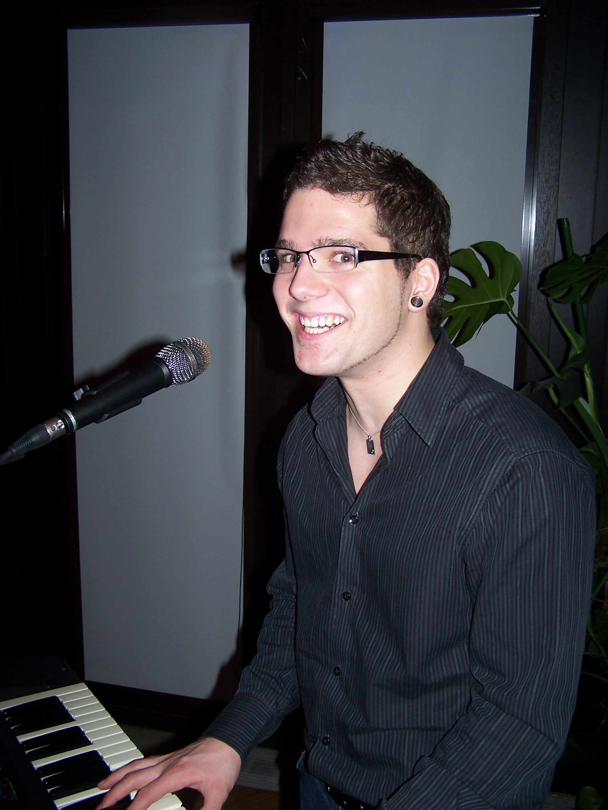

Über uns
Wir haben uns in einer Coverband kennengelernt (Edel als Sängerin, Peter als singender Gitarrist) und nach vielen Stunden singen, lachen, reden, feiern, proben und Spaß haben kam, was kommen musste: wir haben geheiratet. Nachdem wir unsere wilden Jahre in Coverbands hinter uns hatten, gründeten wir zusammen mit einem Keyboarder eine Drei-Mann-Band.
Unser letzter Keyboarder ist (jung, gutaussehend, Musiklehrer) musikalisch zu Größerem berufen, und deshalb haben wir uns nun nach mehr als zehn Jahren entschieden, zu zweit zu musizieren, das heißt, unser dritter Partner ist nun die Technik, und die kann Bass, Schlagzeug, Klavier und Saxophon gleichzeitig.
Alles zusammen – Gesang, Gitarre, ein bisschen Percussion und die Technik von heute – machen es uns möglich, wirklich ALLES zu spielen, was es so gibt. Was wir nicht machen, sind Trash- oder Deathmetal und Techno (das wollen wir einfach nicht) und wir rappen nicht (das können wir einfach nicht).
Welche Musik wir sonst machen, findet ihr unter der Rubrik “Unsere Musik”. Wir spielen mit und ohne Technik (oder wie wir Musiker sagen: “unplugged” und mit “Midifiles”) – ganz wie gewünscht. Unsere Stärke – sagen die Leute – sei unser harmonischer zweistimmiger Gesang.
Und ohne Spaß geht bei uns gar nichts. Wir wollen, dass wir beim Musik machen ausschließlich in lachende Gesichter sehen und wirklich alle Spaß haben: Publikum und Gäste, Veranstalter und Bedienungen, eventuelle Kollegen und Mitkünstlern, die armen Nachbarn und natürlich wir selbst.